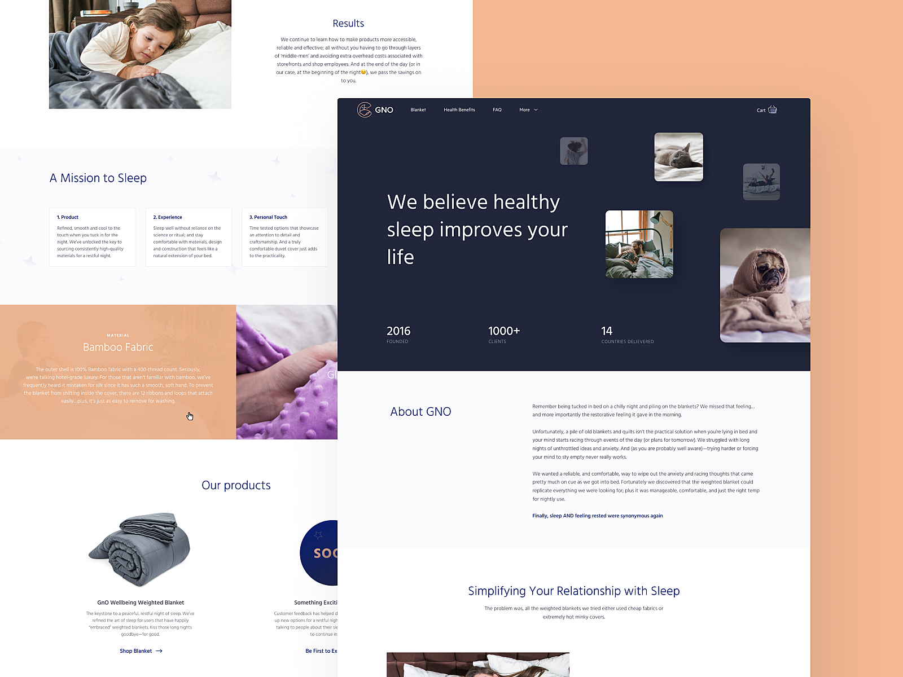
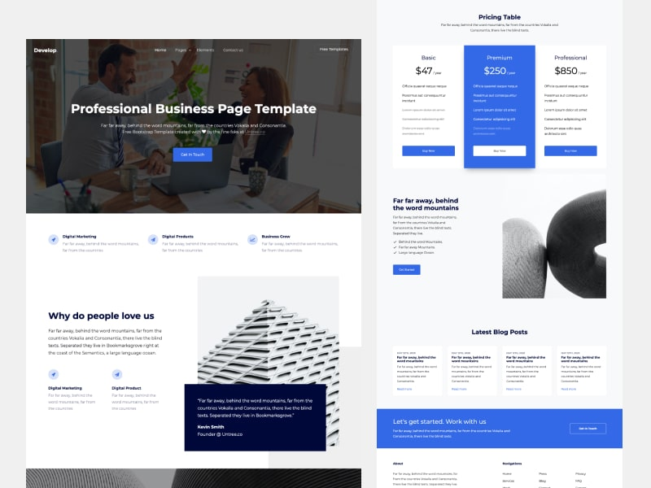
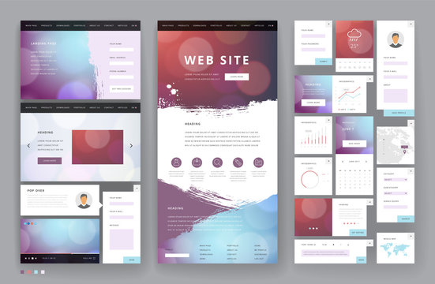
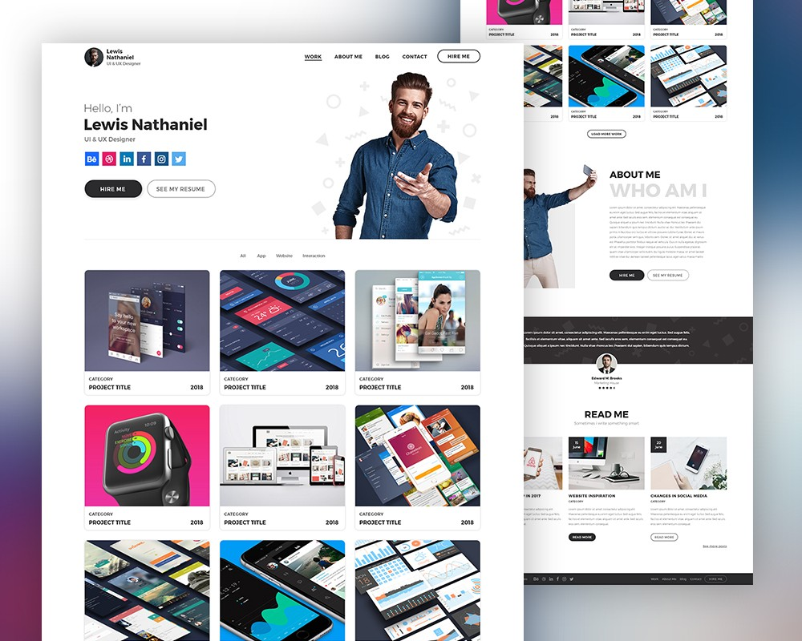

Empower Your Business with Custom Software Solutions
In today's digital age, businesses thrive on innovation, efficiency, and a competitive edge., I understand that every business is unique, and off-the-shelf software may not meet your specific needs. That's why I specialize in delivering tailor-made software solutions that streamline your operations, boost productivity, and elevate your business to new heights. Let's explore the benefits of custom software and the diverse types of software i can build to cater to your requirements.
Benefits of Custom Software:
Unparalleled Efficiency: Off-the-shelf software might offer general functionality, but custom software is designed precisely to match your business processes. This ensures maximum efficiency as you eliminate unnecessary features and focus on what matters most.
Seamless Integration: My custom software seamlessly integrates with your existing systems, saving time and resources by reducing data duplication and manual workarounds. This leads to a more cohesive and productive technology ecosystem.
Scalability: As your business grows, so do your software needs. Custom software can easily scale and adapt to accommodate your expanding operations without requiring significant changes or replacements.
Security: Security is a top priority in the digital landscape. With custom software, you have more control over security measures, reducing the risk of potential vulnerabilities associated with third-party applications.
Competitive Advantage: Stand out from the crowd with unique software that gives you a competitive edge. Tailored to your needs, your custom software can provide features that set you apart in the market and offer an unparalleled user experience to your customers.
Types of Software I Build:
Enterprise Resource Planning (ERP) Software:
Streamline your business processes, enhance collaboration, and optimize resource management with our custom ERP solutions. From inventory and supply chain management to financials and human resources, my ERP software unifies your operations in one comprehensive platform.
Customer Relationship Management (CRM) Software:
Build strong and lasting relationships with your customers through CRM solutions. Manage leads, track interactions, and gain valuable insights into customer behavior to deliver personalized experiences and boost customer satisfaction.
Web and Mobile Applications:
Engage your target audience with intuitive and user-friendly web and mobile applications. From e-commerce platforms to custom business tools, I develop applications that are responsive, reliable, and visually appealing.
Business Intelligence (BI) and Analytics:
Harness the power of data with BI and analytics solutions. Make data-driven decisions, identify trends, and gain valuable insights into your business performance with our custom-built analytics tools.
Cloud-Based Solutions:
Take advantage of the scalability and flexibility of cloud technology with my cloud-based software solutions. From cloud-based storage to Software-as-a-Service (SaaS) applications, i ensure secure and efficient access to your data from anywhere, anytime.
I believe that software should be an enabler, not a hindrance, to your business success. With my custom software solutions, you can experience the full potential of technology tailored to your unique requirements. Let me partner with you on your digital journey, and together, we'll transform your business into a more agile, productive, and competitive force in the market.
Am are always interested in hearing about new projects. So if you'd like to chat, please get in touch.
website development
Elevate Your Online Presence with Custom Web Development
In the digital age, a compelling online presence is essential for any business to thrive. Am are passionate about crafting exceptional web solutions that make a lasting impact. My custom web development services empower businesses like yours to reach wider audiences, boost engagement, and achieve online success. Let's explore the benefits of custom web development and the diverse types of web projects i can bring to life for your brand.
Benefits of Custom Web Development:
Unique Brand Identity: Stand out from the crowd with a website that reflects your brand's personality and values. Custom web development allows us to create a unique and memorable digital identity that resonates with your target audience.
Tailored User Experience: Your website should be a seamless extension of your brand, offering an intuitive and delightful user experience. Custom development allows us to optimize every aspect of the user journey, resulting in higher engagement and conversion rates.
Responsive Design: In today's mobile-driven world, a responsive website is a must. My custom web development ensures that your site looks and functions flawlessly across all devices, providing a consistent experience for users.
Search Engine Optimization (SEO): Your website's visibility on search engines can make or break your online success. I integrate SEO best practices into the development process to ensure your site ranks well in search results and attracts organic traffic.
Scalability and Flexibility: As your business grows and evolves, your website needs to keep pace. Custom web development gives you the flexibility to add new features and functionalities, ensuring your website remains future-proof and scalable.
Types of Web Projects I Develop:
Corporate Websites:
Create a professional and authoritative online presence with our custom corporate website development services. Showcase your brand, products, and services in a visually appealing and informative manner, leaving a lasting impression on your visitors.
E-Commerce Solutions:
Take your business to new heights with our custom e-commerce development. I build secure and user-friendly online stores that facilitate seamless transactions, optimize the shopping experience, and drive sales.
Content Management Systems (CMS):
Empower your team with the ability to manage and update website content effortlessly. My custom CMS solutions offer a user-friendly interface that allows you to keep your website fresh and up-to-date.
Web Applications:
Whether it's a customer portal, booking system, or data management tool, I develop robust web applications that streamline your business processes and enhance user engagement.
Landing Pages and Microsites:
Capture leads, promote new products, or run marketing campaigns with my custom landing pages and microsites. These high-converting web assets are designed to achieve specific business goals.
I believe that your website is the digital gateway to your business. With my custom web development services, you can unlock the full potential of your online presence. Let me collaborate with you to build a powerful and captivating website that elevates your brand, engages your audience, and drives tangible results. Together, we'll create a digital masterpiece that sets your business apart from the competition.
Am are always interested in hearing about new projects. So if you'd like to chat, please get in touch.
Update & maintanance
Streamlined Operations with Pre-Built Web and Software Update & Maintenance Services
In the fast-paced digital landscape, businesses need reliable and up-to-date web and software solutions to stay competitive. I offer pre-built web and software update & maintenance services that ensure your digital assets remain efficient, secure, and cutting-edge. I take care of the technical aspects, allowing you to focus on your core business activities. Let's explore the benefits of investing in my pre-built web and software update & maintenance services and how they can streamline your operations.
Benefits of Pre-Built Web and Software Update & Maintenance Services:
Reduced Downtime: My proactive approach to maintenance and updates ensures that your web and software solutions are kept running smoothly. Regular maintenance prevents unexpected issues and minimizes downtime, maximizing your productivity.
Enhanced Security: Cybersecurity threats are ever-evolving, and outdated software can leave your systems vulnerable. With my update & maintenance services, we promptly address security patches and vulnerabilities, safeguarding your data and protecting your business from potential breaches.
Optimized Performance: Over time, web and software solutions can become sluggish due to outdated components or inefficient code. My maintenance services optimize performance, ensuring your systems are running at peak efficiency.
Seamless User Experience: Pre-built web and software solutions need to provide a seamless user experience. I identify and address usability issues, making navigation intuitive and enhancing user satisfaction.
Scalability and Compatibility: As your business grows, so do your technology requirements. I ensure that your pre-built solutions remain scalable and compatible with new hardware and software, allowing your business to expand without technological constraints.
Pre-Built Web and Software Update & Maintenance Services I Offer:
Updates and Patches:
I provide timely updates and security patches to keep your web and software solutions current and protected against emerging threats.
Bug Fixing and Issue Resolution:
I identify and address bugs, glitches, and technical issues promptly, ensuring your systems operate smoothly without disruption.
Performance Optimization:
I conduct routine performance audits and optimizations to ensure your web and software solutions deliver optimal speed and efficiency.
Compatibility Testing:
With each update, I thoroughly test compatibility with various devices, browsers, and operating systems, ensuring seamless user experiences across platforms.
Scalability Planning:
As part of my maintenance services, i assess your future growth plans and ensure your pre-built solutions are designed to accommodate your evolving needs.
I understand the importance of reliable and updated web and software solutions in today's digital landscape. My pre-built web and software update & maintenance services are designed to streamline your operations, improve security, and optimize performance, all while freeing up your time to focus on your business. Let me be your trusted partner in ensuring your digital assets remain robust and future-proof. With my expertise in updates and maintenance, you can rest assured that your technology is in capable hands, allowing your business to thrive and scale with confidence.
Am are always interested in hearing about new projects. So if you'd like to chat, please get in touch.
UI/UX Design
Elevate User Experiences with Intuitive UI/UX Design
In the ever-evolving digital landscape, the success of any product or application hinges on delivering exceptional user experiences. I take pride in our expertise in UI/UX design, crafting visually stunning and user-centric interfaces that captivate and delight users. My custom UI/UX design services are tailored to meet your specific goals and resonate with your target audience. Let's explore the benefits of investing in UI/UX design and the diverse types of projects we can create to elevate your digital presence.
Benefits of UI/UX Design:
Enhanced User Engagement: An intuitive and visually appealing interface can significantly boost user engagement. By understanding your users' needs and preferences, In my UI/UX designs, I create seamless interactions that keep users coming back for more.
Improved Conversion Rates: A well-designed user interface guides users through the conversion funnel effortlessly. With attention to detail and user behavior analysis, I optimize your interface to increase conversion rates and achieve your business objectives.
Brand Consistency: Consistency in design is crucial for brand recognition and recall. Our UI/UX design team ensures that your digital products maintain a cohesive look and feel that aligns with your brand identity, building trust and loyalty among your audience.
Usability and Accessibility: User-centered design means considering the needs of all users. I prioritize usability and accessibility, ensuring that your interface is easy to navigate for everyone, regardless of their abilities or devices.
Competitive Advantage: In today's competitive market, exceptional UI/UX design can set you apart from the competition. By investing in a well-crafted user experience, you position your brand as innovative and customer-focused.
Types of UI/UX Projects I Design
Website Redesign:
Transform your website into a user-friendly and visually striking platform. My UI/UX design expertise revamps your website's interface to improve navigation, responsiveness, and overall user experience.
Mobile App Design:
Captivate mobile users with captivating app interfaces. From wireframing to prototyping, i create mobile app experiences that maximize usability and drive engagement.
Product Interface Design:
Bring your digital products to life with our custom interface design. Whether it's a SaaS application, dashboard, or software tool, I optimize the user journey to ensure seamless interactions and increased productivity.
E-Commerce User Experience:
Boost online sales and customer satisfaction with our e-commerce UI/UX design services. I create intuitive and visually appealing e-commerce experiences that simplify the shopping process and encourage repeat business.
Brand Identity and Style Guides:
Establish a consistent visual language for your brand with our UI/UX design expertise. I craft comprehensive brand style guides to ensure that your brand's personality is consistently reflected across all touchpoints.
I believe that UI/UX design is not just about aesthetics; it's about understanding and anticipating user needs to create transformative experiences. My custom UI/UX design services are tailored to elevate your digital products and give your brand a competitive edge. Let me collaborate to craft a user experience that leaves a lasting impression on your audience and drives your business towards success. Together, we'll design the future of your digital presence, one delightful interaction at a time.
Am are always interested in hearing about new projects. So if you'd like to chat, please get in touch.
I.T & I.C.T support
Empowering Your Business with Reliable IT/ICT Support Services
In today's fast-paced business world, having a robust and efficient IT/ICT infrastructure is essential for success. I understand the significance of reliable technology and offer top-notch IT/ICT support services to keep your business running smoothly. Am committed to providing tailored solutions, proactive monitoring, and swift issue resolution to ensure your technology works seamlessly, allowing you to focus on your core business objectives. Let's explore the benefits of investing in our IT/ICT support services and the range of solutions we offer to meet your specific needs.
Benefits of IT/ICT Support Services:
Increased Uptime and Productivity: Downtime can be costly for businesses, leading to lost revenue and frustrated employees. Our proactive approach to IT/ICT support ensures that potential issues are identified and resolved before they impact your operations, maximizing uptime and productivity.
Expert Guidance and Consultation: Navigating the ever-changing IT landscape can be challenging. With my ever growing experience in this field, am here to offer guidance and strategic insights, helping you make informed decisions about your technology investments.
Enhanced Security and Data Protection: Cybersecurity threats are a constant concern in the digital world. My IT/ICT support services include robust security measures to safeguard your sensitive data and protect your business from potential breaches.
Scalability and Flexibility: As your business grows, your IT requirements may evolve. My support services are scalable and adaptable, ensuring that your technology can keep up with your changing needs.
Cost-Effectiveness: Investing in our IT/ICT support services can lead to cost savings in the long run. By preventing major issues and efficiently resolving minor ones, I help you avoid costly downtime and minimize the need for emergency IT expenses.
Types of IT/ICT Support Services I Offer:
Remote Help Desk Support:
My responsive help desk team is available to assist you remotely, providing timely solutions to IT/ICT-related queries, troubleshooting technical issues, and offering guidance on using various technologies.
On-Site Support:
For more complex issues or hands-on assistance, I show up on your site location to diagnose and resolve IT/ICT challenges, ensuring minimal disruption to your operations.
Network Infrastructure Management:
I optimize and manage your network infrastructure, ensuring stable and secure connectivity, and helping you achieve optimal performance for your business-critical applications.
Cloud Services Management:
Embrace the power of the cloud with my expert cloud services management. I help you migrate, maintain, and optimize cloud-based solutions, enabling you to take full advantage of scalable and cost-efficient technologies.
Data Backup and Recovery:
Protect your valuable data with my robust backup and recovery solutions. I implement reliable data backup strategies to safeguard your information, and in the event of data loss, i efficiently restore your systems to minimize downtime.
Am committed to being your trusted technology partner. With my comprehensive IT/ICT support services, you can rest assured that your technology is in capable hands, allowing you to focus on growing your business. Let me empower your organization with reliable, secure, and scalable IT solutions that drive efficiency, productivity, and business success. Together, we'll navigate the dynamic world of technology and turn it into a powerful asset for your organization's growth.
Am are always interested in hearing about new projects. So if you'd like to chat, please get in touch.
Digital marketing
Unleash Your Potential with Dynamic Digital Marketing Solutions
In the digital era, marketing has evolved into an immersive and data-driven landscape that demands strategic expertise and adaptability. Am passionate about harnessing the power of digital marketing to help businesses thrive and achieve their goals. My comprehensive digital marketing solutions are tailored to elevate your brand's online visibility, attract qualified leads, and drive meaningful conversions. Let's explore the benefits of investing in our digital marketing services and the range of solutions we offer to propel your business to new heights in the digital realm.
Benefits of Digital Marketing Services:
Targeted Reach: Digital marketing enables precise targeting, allowing you to reach your ideal audience with relevant content and offerings. By understanding your customer personas, I create tailored campaigns to maximize engagement and conversion rates.
Measurable Results: Data is at the core of digital marketing, and i utilize advanced analytics tools to measure the performance of your campaigns accurately. This data-driven approach enables me to optimize strategies in real-time for improved ROI.
Cost-Effectiveness: Digital marketing is a cost-efficient alternative to traditional marketing channels. I always ensure that your budget is maximized, delivering impactful results without unnecessary expenses.
Brand Awareness and Recognition: Building brand awareness is a key pillar of digital marketing. I craft compelling content and engaging campaigns to increase your brand's visibility across various digital platforms.
Enhanced Customer Engagement: My digital marketing solutions focus on fostering meaningful interactions with your audience. By responding to customer inquiries promptly and sharing valuable content, I build trust and loyalty for your brand.
Types of Digital Marketing Solutions I Offer:
Search Engine Optimization (SEO):
I optimize your website to rank higher on search engine results pages. By targeting relevant keywords and improving site visibility, we drive organic traffic and enhance your online presence.
Pay-Per-Click (PPC) Advertising:
I design and manage targeted PPC campaigns to place your brand at the forefront of search engine results and relevant websites. My strategic approach ensures maximum return on your ad spend.
Content Marketing:
Compelling content is the cornerstone of successful digital marketing. My content specialists craft engaging blog posts, articles, videos, and infographics that resonate with your audience and establish your brand as a thought leader.
Social Media Marketing:
Using social media, I create and execute data-driven strategies to build brand awareness, engage your audience, and drive website traffic. I leverage various social media platforms to connect with your target audience effectively.
Email Marketing:
Nurture leads and retain customers through personalized email marketing campaigns. I develop engaging email content and designs to keep your audience informed and engaged with your brand.
I believe in the transformative power of digital marketing to unlock your business's potential. My dynamic digital marketing solutions are designed to deliver tangible results and accelerate your growth in the digital landscape. Let me be your strategic partner in navigating the ever-changing world of digital marketing, and together, we'll craft a winning online presence that sets your brand apart from the competition. With our expertise and your vision, the possibilities for your business are limitless.
Am are always interested in hearing about new projects. So if you'd like to chat, please get in touch.
SEO Optimization
Elevate Your Online Visibility with Expert SEO Optimization
In the vast and competitive digital landscape, appearing at the top of search engine results is crucial for driving organic traffic and gaining a competitive edge. I also specialize in SEO optimization, helping businesses like yours enhance their online visibility and reach their target audience effectively. My experienced SEO experts employ cutting-edge strategies to improve your website's ranking, increase organic traffic, and boost conversions. Let's explore the benefits of investing in our SEO optimization services and how we can elevate your online presence.
Benefits of SEO Optimization Services:
Improved Search Engine Rankings: I perform thorough keyword research and optimize your website's content, meta tags, and structure to enhance its relevance to search engines. As a result, your website climbs higher in search engine rankings, making it more discoverable by potential customers.
Targeted Traffic and Qualified Leads: By focusing on relevant keywords and optimizing your website for specific user intents, I attract targeted traffic that is more likely to convert into qualified leads and customers.
Enhanced User Experience: SEO optimization goes hand-in-hand with user experience improvements. I ensure that your website is mobile-friendly, loads quickly, and offers intuitive navigation, which leads to higher user satisfaction and longer browsing sessions.
Cost-Effectiveness: Compared to traditional advertising, SEO optimization offers a cost-effective approach to reach your target audience. Once your website achieves higher rankings, organic traffic flows in without ongoing expenses for each click or impression.
Long-term Visibility: With sustainable SEO strategies, your website maintains its improved rankings over time, ensuring a consistent flow of organic traffic and providing a solid foundation for your online presence.
SEO Optimization Strategies I Employ:
On-Page Optimization:
I optimize your website's content, meta tags, headings, and URLs to ensure they align with targeted keywords and user intent, making your pages more search engine-friendly.
Technical SEO:
I conduct a comprehensive audit of your website's technical elements, including site structure, page speed, mobile responsiveness, and crawlability, and make necessary improvements to enhance its performance in search engines.
Link Building and Outreach:
I build high-quality backlinks from reputable websites and engage in strategic outreach to promote your content and increase your website's authority in search engines.
Local SEO:
For businesses with a local presence, I optimize your website for local search queries, ensuring that you appear in the local pack and attract relevant traffic from your area.
Content Strategy:
I develop a comprehensive content strategy that aligns with your target audience's interests and search behavior. I create valuable and shareable content that positions your brand as an industry authority.
I believe that SEO optimization is a powerful tool to elevate your online presence and attract qualified leads. I tailored SEO strategies are designed to improve your search engine rankings, drive targeted traffic, and boost your business's visibility. Let me be your trusted partner in navigating the dynamic world of SEO, and together, I will unlock the full potential of your website, making it a valuable asset in achieving your business goals. With our expertise and dedication, your brand will rise above the competition and thrive in the digital realm.
Am are always interested in hearing about new projects. So if you'd like to chat, please get in touch.
Consultation services
Strategic Tech Consultation Services: Unleashing the Power of Innovation
In the ever-evolving world of technology, businesses must stay ahead of the curve to remain competitive. I offer comprehensive tech consultation services that empower your organization with strategic insights, innovative solutions, and expert guidance. I collaborate closely with you to understand your unique needs and challenges, providing tailored recommendations that align with your business objectives. Let's explore the benefits of investing in our tech consultation services and how we can unleash the power of innovation for your organization.
Benefits of Tech Consultation Services:
Technology Roadmap Development: My tech consultation services help you chart a clear and actionable roadmap for your technology initiatives. I align your business goals with innovative technology solutions to drive growth and efficiency.
Expert Guidance: Rely on the expertise of my technology consultantation to navigate complex technological challenges. From emerging trends to industry best practices, I provide informed guidance to ensure optimal decision-making.
Cost Optimization: My tech consultation services focus on identifying cost-effective solutions that deliver maximum value. I assess your technology investments and offer recommendations to optimize costs while maximizing benefits.
Seamless Integration: When adopting new technologies, seamless integration is vital. I ensure a smooth transition by evaluating compatibility and devising implementation strategies that minimize disruptions.
Competitive Edge: By leveraging the latest technology trends and innovations, my consultation services help you gain a competitive edge in the market, positioning your business as a trailblazer in your industry.
Tech Consultation Services I Offer:
Technology Needs Assessment:
I conduct a comprehensive assessment of your current technology infrastructure, processes, and challenges to identify areas for improvement and opportunities for innovation.
Digital Transformation Strategy:
I assist you in formulating a holistic digital transformation strategy that leverages modern technologies, such as AI, IoT, and cloud computing, to optimize your operations and customer experiences.
Software and Vendor Selection:
Selecting the right software and technology vendors is crucial for success. I guide you through the selection process, analyzing your requirements and recommending solutions that best fit your needs.
Security and Compliance:
I assess your cybersecurity measures and ensure compliance with industry standards and regulations, mitigating risks and protecting your organization from potential threats.
Technology Training and Workshops:
As part of my tech consultation services, I offer training sessions and workshops to empower your team with the knowledge and skills needed to embrace new technologies effectively.
I believe that successful businesses are built on the foundation of strategic technology investments and innovations. My tech consultation services offer a collaborative approach to help your organization unleash the power of technology and achieve your business goals. Let me be your trusted technology partner, guiding you on your digital journey towards growth, efficiency, and a competitive advantage. With my expertise and dedication, your organization will be at the forefront of technological advancements, ready to embrace the future with confidence.
Am are always interested in hearing about new projects. So if you'd like to chat, please get in touch.
Hello! Am Alexander Ssenyondo
Am a software developer...Here to help you embrace the future with innovative tech solutions
With my diverse range of IT-related services, I aim to empower your business with cutting-edge technology solutions, allowing you to stay ahead in today's fast-paced digital landscape. Contact me now to explore how I can optimize your IT infrastructure and drive your business towards success.
This services here are the very best and i had mine

This services here are the very best and i had mine

This services here are the very best and i had mine

This services here are the very best and i had mine

This services here are the very best and i had mine
This services here are the very best and i had mine
Services
Web Development
I, as a dedicated professional, specialize in crafting visually appealing, user-friendly, and responsive websites that are tailored to meet your unique business needs. Whether you're in need of a simple informational site or a complex e-commerce platform, I leverage the latest technologies and industry best practices to ensure a seamless online presence for your brand.
I specialize in developing custom software solutions that streamline your business processes, boost efficiency, and enhance productivity. From desktop applications to mobile apps, I work closely with you to understand your requirements and deliver innovative and scalable software products.
Minimize downtime and maximize productivity with my reliable IT support and maintenance services. I offer prompt assistance, troubleshooting, and regular system checks to keep your IT environment running smoothly.
Protecting your valuable digital assets is my priority. I employ cutting-edge tools and methodologies as a cybersecurity expert to safeguard your systems from potential threats. From vulnerability assessments to implementing robust security measures, I ensure your data and networks remain secure and compliant with industry standards.
Pre-built Websites Update
If you already have a website but need updates or improvements, I've got you covered. I can enhance your existing website with the latest features and functionalities.
User experience is crucial to the success of any digital product. I focus on creating intuitive and engaging user interfaces that enhance customer satisfaction and drive conversions.
My IT consultation services are designed to help your business navigate the ever-evolving technology landscape. I provide comprehensive assessments, strategic planning, and expert advice to align your IT infrastructure with your business objectives. Whether you need guidance on cybersecurity, cloud migration, or digital transformation, I am here to assist you.
My digital marketing skills/services encompass a range of strategies to boost your online visibility, reach, and engagement. I employ various channels to promote your brand and drive growth.
Search Engine Optimization (SEO) is crucial for improved website rankings. I integrate SEO best practices into your website design to enhance its visibility on search engines.